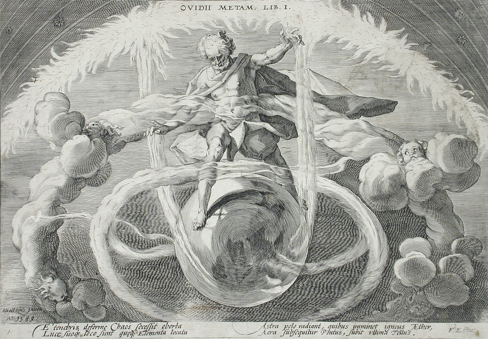
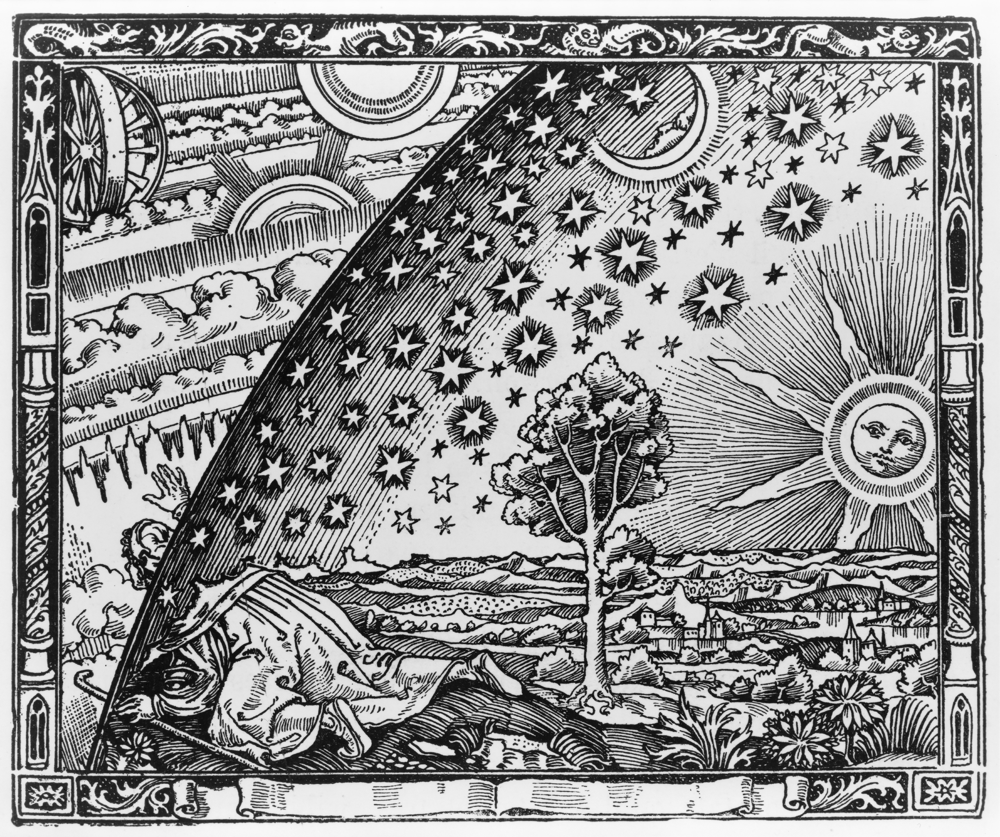

"Truth is the beginning of knowledge" -Aristotle
Creation stories have long served as fundamental narratives that shape our understanding of existence and humanity’s place in the cosmos. Across various cultures, ancient texts recount the emergence of the universe and life itself, often featuring a creator or divine being as the source of all that is. For instance, the Enuma Elish, an ancient Babylonian text, describes the god Marduk’s triumph over chaos to bring order and life to the world. Similarly, the story of Adapa, a Sumerian figure, reveals the divine origins of humanity and the complexities of human existence.
The Biblical Genesis account echoes these themes, presenting a singular God who creates the heavens and the Earth and breathes life into Adam, the first human. Despite the differing cultural contexts, these stories converge on a shared belief in a divine creator, suggesting a universal quest to explain the origins of life and the universe.
Yet, as we delve into these ancient narratives, we encounter deep questions that have no definitive answers: What is the nature of the universe? Why do we exist? What lies beyond our perception of reality? These inquiries transcend time and culture, reflecting humanity’s existential struggles and the search for meaning. In contemporary discussions, this ancient quest for understanding has evolved into modern ideologies, such as simulation theory. This theory posits that our reality could be a computer simulation, raising questions about existence and consciousness reminiscent of those posed in ancient texts.
Interestingly, simulation theory can be viewed as the latest iteration of the creation narratives that have been told and retold throughout millennia, reflecting humanity’s enduring fascination with the nature of reality and our origins. By examining these ancient stories alongside modern theories, we can explore how humanity’s quest for understanding has transformed over time, yet fundamentally remains rooted in the search for answers to the same existential questions. In doing so, we may find that the journey itself—embracing the mysteries and uncertainties—holds as much significance as any answers we might seek.
Thanks for taking the time to read this and any thoughts or feedback can be submitted at thee33xp@proton.me